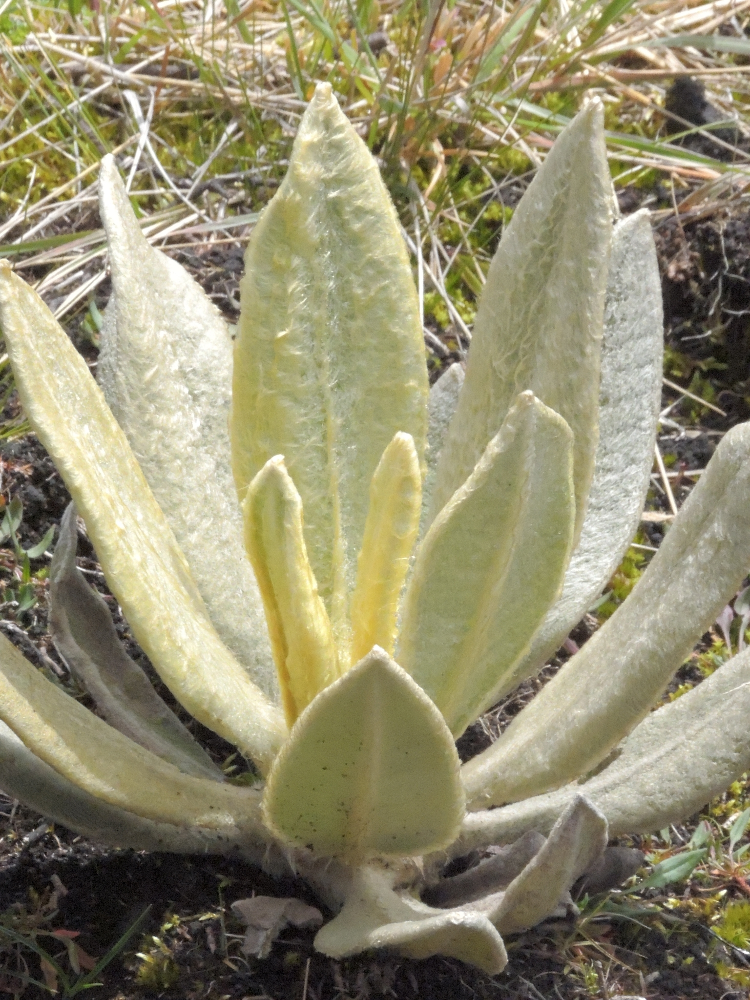
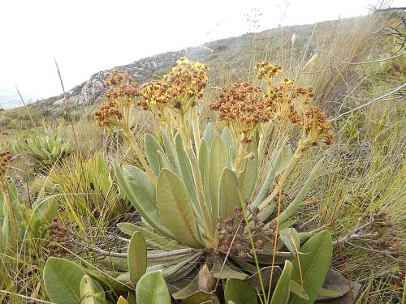

Boyacá , El rey de los frailejones.
Segun el Instituto Humbold El total de especies de frailejones registradas en el mundo es de 144, Solamente en Colombia crecen Mas de 90 de esas especies, siendo el país con mas presencia de frailejones en todo el mundo, Curiosamente estos mismos solo crecen o tienen presencia en paises como Ecuador, Venezuela y Colombia. En Boyacá departamento de Colombia, Habita alredor del 50% del total de las especies de frailejones de su nación.
Frailejon (Espeletia Ocetana)

Frailejon (Espeletia paipana)
Frailejon ( Espeletia ramosa)
Flora de Boyacá
Explora por grupos
Animales
Plantas
Paisajes
Curiosidades
¿Sabías que el páramo de Ocetá Ubicado en Mongui - Boyacá es considerado el páramo más hermoso del mundo ?
¿Sabías que el páramo del Sumapaz Ubicado en Bogotá - Cundinamarca es el más grande del mundo ?
¿Sabías que la laguna de Tota Ubicada en el Departamento de Boyacá es la más grande de Colombia?